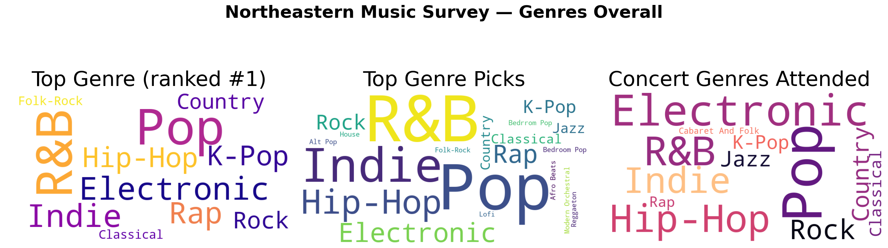
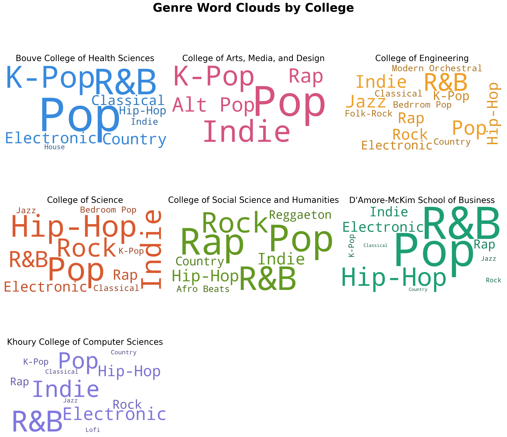
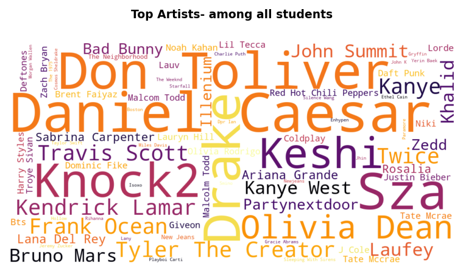
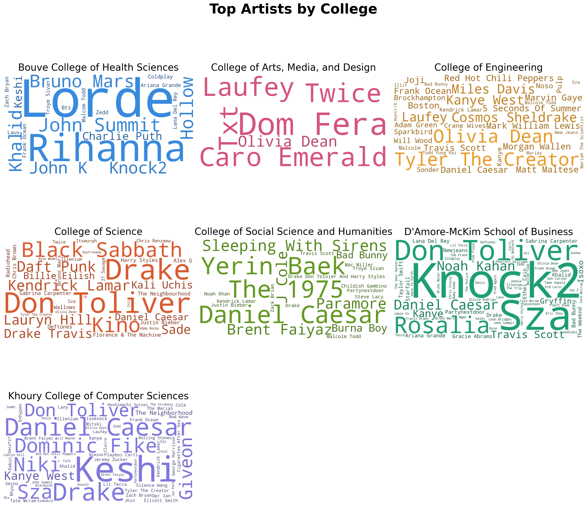

The word clouds displayed here is the number one genre among all students, a combination of all three top picks and what concerts a student is most likely to attend based on genre. Pop appears consistently as the largest word across all three summaries, showing that all students have some preference towards that genre of music. R&B and hip-hop also appear prominently, indicating strong interest in contemporary and mainstream music styles. Surprisingly, electronic music has the most concert attendance compared to the other genres like pop, R&B, etc since these are the most popular genres. This could suggest that students are more likely to attend a concert in high-energy environments. Overall, the results indicate that modern popular genres dominate listening behavior and may strongly influence the attendance for concerts. .

These sets of word clouds are based on genres by colleges. It shows the subtle differences in music taste across different academic groups. pop consistently remains the most popular across almost all colleges, but some colleges do show a slight preference for other genres. For example, students in the College of Engineering and College of Science show strong preference towards hip-hop, rock, and indie, while students in the College of Arts, Media, and Design show stronger preference for indie and alternative pop genres. The D’Amore-McKim School of Business shows strong interest in R&B and pop, suggesting a preference for contemporary mainstream music. These patterns suggest that while the main genre preferences remain consistent across Northeastern students , there are small variations that may reflect differences in student interests or social environments within each college.

This cloud map shows the most popular artists amongst all Northeastern students that took the survey. Artists such as Don Toliver, Daniel Caesar, Drake, SZA, Olivia Dean, and Knock2 appear the most, indicating high popularity among students. Many of these artists fall within the R&B, hip-hop, and pop genres, which aligns with the genre word cloud findings. The presence of both mainstream artists (Drake, SZA, Kanye West) and emerging artists (Olivia Dean, Knock2) indicate that students engage with both popular music and new and upcoming music as well. This mix of listening to mainstream musicians and newer musicians indicates that students’ listening habits are influenced by both popular culture and current music trends.

These sets of word clouds are based on artist popularity by colleges show variation in artist popularity across different academic groups, while still maintaining some overlap in commonly mentioned performers. Don Toliver, Daniel Caesar, Drake, and Olivia Dean appear across multiple colleges, suggesting broad popularity across the university. However, certain colleges show unique artist preferences. For example, the College of Science shows stronger representation of artists such as Kendrick Lamar and Black Sabbath, while the College of Social Science and Humanities shows artists such as Brent Faiyaz and The 1975. Khoury College of Computer Sciences shows a mix of contemporary R&B and Hip-Hop artists such as Drake, SZA, and Giveon. These differences may reflect varying cultural influences or social networks within academic communities, suggesting that artist preferences are not entirely uniform across student groups.
